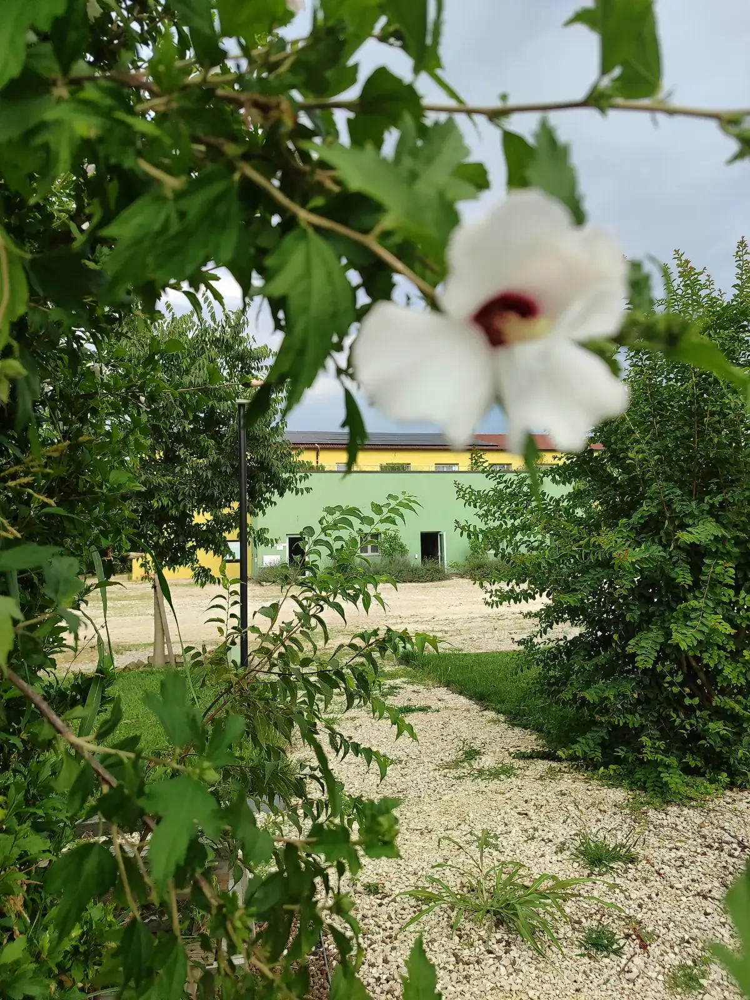
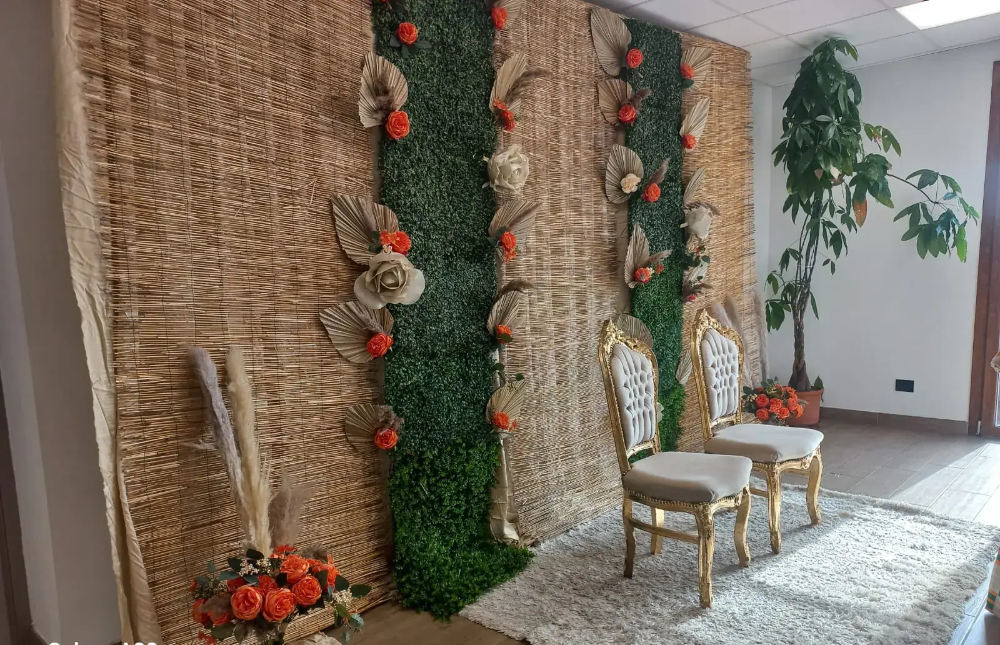
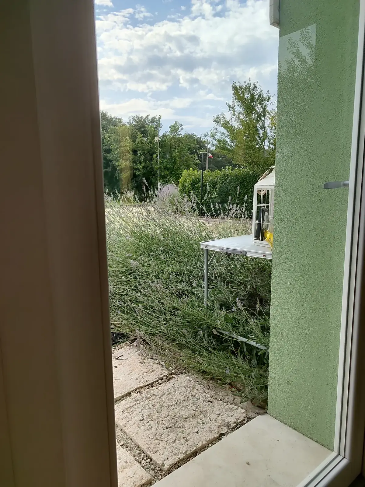
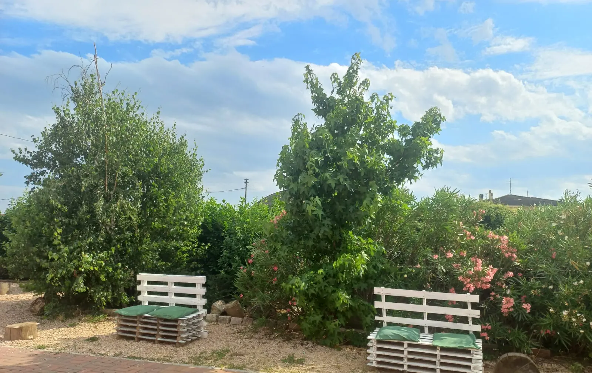
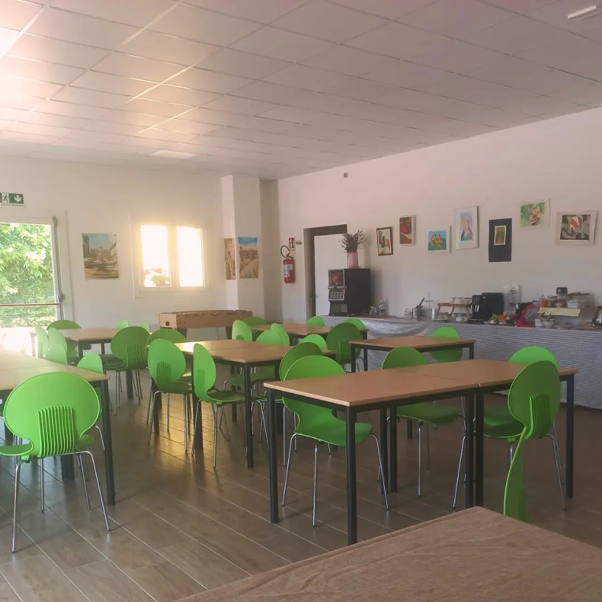
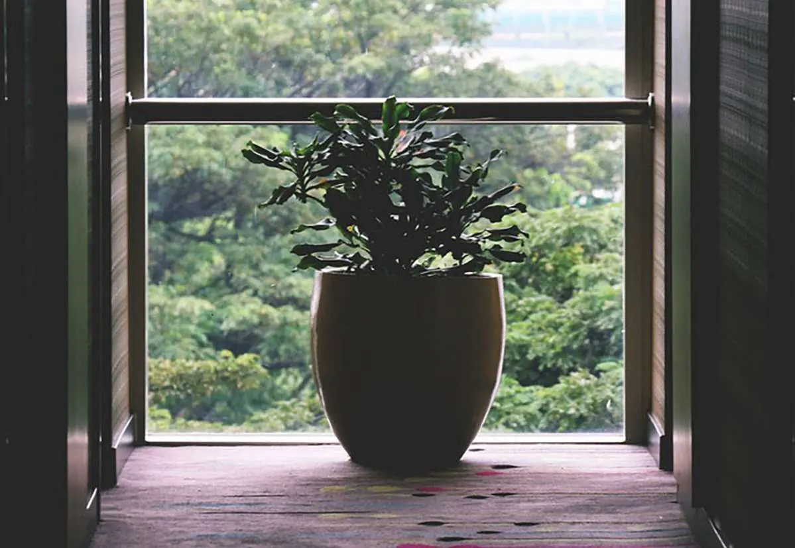
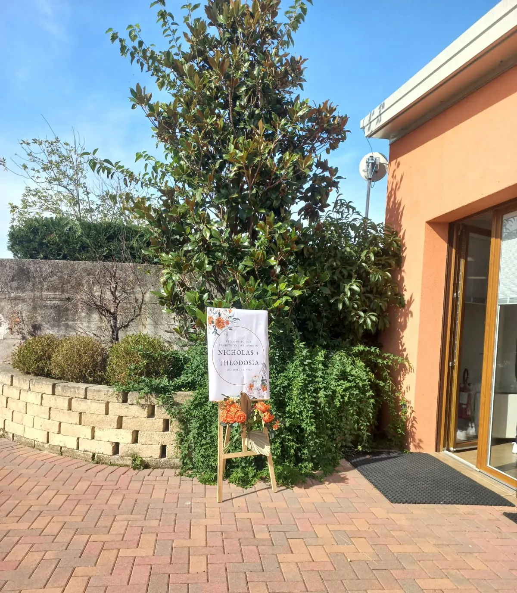

GardafarmAsinelliTrekking lento
GardafarmAsinelliTrekking lento
 GardafarmLavandaGiardino sensoriale
GardafarmLavandaGiardino sensoriale
 GardafarmCamereAgriturismo a Verona
GardafarmCamereAgriturismo a Verona
 GardafarmApiIl magico mondo
GardafarmApiIl magico mondo
 GardafarmFattoriaDidattica e sociale
GardafarmFattoriaDidattica e sociale
 GardafarmPescoFioriture di campagna
GardafarmPescoFioriture di campagna
 GardafarmSale eventiFeste e team building
GardafarmSale eventiFeste e team building
 GardafarmTeam cookingMani in pasta
GardafarmTeam cookingMani in pasta
 GardafarmOrtoStagioni e raccolti
GardafarmOrtoStagioni e raccolti
Esperienze autentiche a Gardafarm Verona e Villafranca
Scorri per scoprireDue sedi nel verde: Verona e Villafranca
Stare bene
nella natura
tra piante e alberi Verona
& Villafranca


Dove la natura
abbraccia l'accoglienza
Un luogo in cui ogni spazio, una stanza, un giardino, una sala, si trasforma in un invito alla condivisione, al benessere, a relazioni autentiche e a nuove possibilità.
Camere accoglienti, giardini sensoriali, fattoria didattica e spazi versatili accolgono soggiorni, eventi privati, team building, feste aziendali e percorsi educativi per scuole e famiglie.
Scegli
la tua sede


A Gardafarm la natura non è solo un luogo: è maestra, casa e occasione di incontro.
Esperienze
in natura
Laboratori in natura e con gli animali, team cooking, team art, benessere, attività creative per team building, addii al nubilato, compleanni, eventi privati e aziendali, trekking e bicicletta sulle piste ciclabili vicine.
Tutte le esperienze
Verona e Villafranca
Team buildingCucina, arte e collaborazione
Villafranca
Giornata del contadinoUn giorno in fattoria
Verona e Villafranca
Il magico mondo delle apiAlveari, fiori e miele
 Villafranca
Trekking con gli asinelliPasseggiata tra natura e tenerezza
Villafranca
Trekking con gli asinelliPasseggiata tra natura e tenerezza
 Verona e Villafranca
Saperi e saporiErbe aromatiche, profumi e colori
Verona e Villafranca
Saperi e saporiErbe aromatiche, profumi e colori
 Villafranca
Sentiero del campioneLibero e gratuito
Villafranca
Sentiero del campioneLibero e gratuito
La vita
a Gardafarm













Ti aspettiamo
nel verde
Soggiorni, feste, gite scolastiche o una giornata per il tuo team: raccontaci cosa hai in mente e prepariamo insieme la proposta.